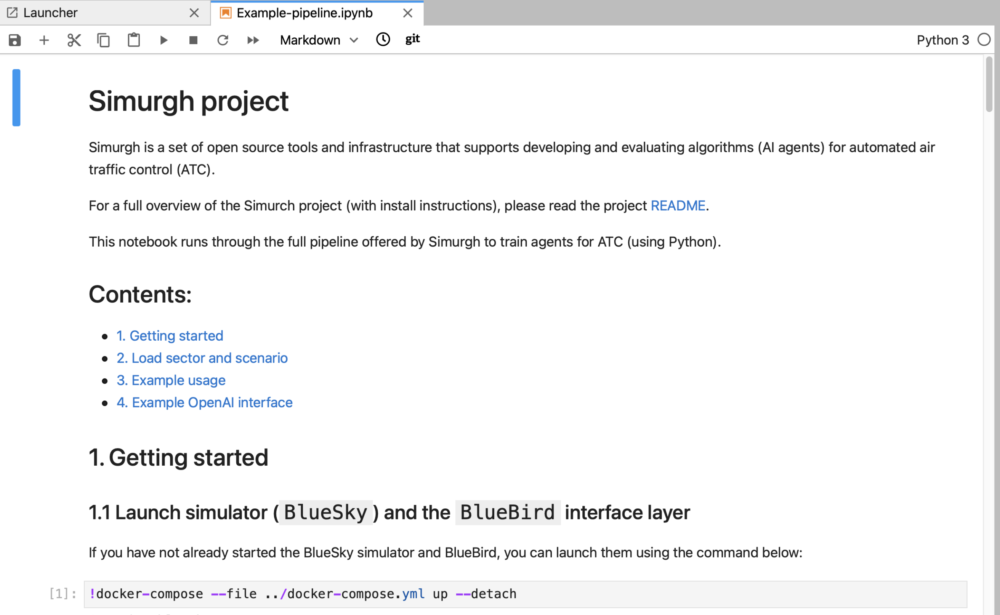
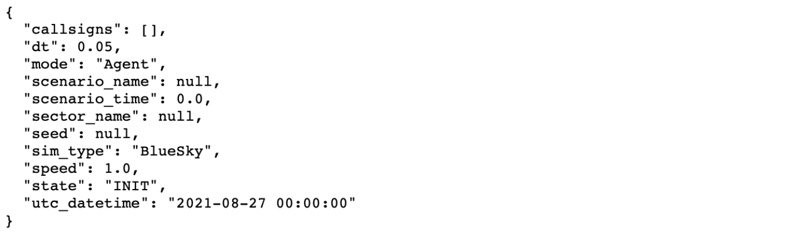
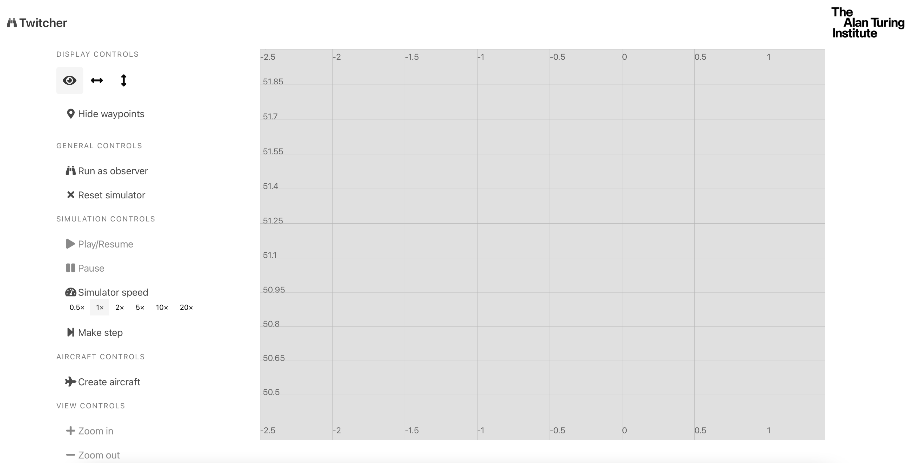

Installation Instructions¶
In order to run air traffic simulations, the following requirements need to be met:
[ ] Have an instance of an ATC simulator running - for example BlueSky
[ ] Have an instance of the BlueBird API running
[ ] Have a way to interact with the simulation running either via
[ ] Twitcher or
[ ] pyDodo or rdodo via the command line
Additionally if user-generated scenarios or sectors are being run then it is useful to:
[ ] Have an instance of Aviary running for scenario generation and to provide metrics to score performance.
There are several ways this can be achieved, either via a Docker container or by compiling from source. Both methods will be described here.
Using a Docker container¶
In the first instance the required enviroment can be initiated using a Docker container and a repository set up in the first phase of the project. This repository is known as Simugh.
1.1 Clone the Simurgh repository¶
git clone https://github.com/alan-turing-institute/simurgh.git
All commands described in the subsequent sections are meant to be run from inside the repo. After cloning the repo make sure to:
cd simurgh
1.2 Run BlueSky, BlueBird, & Twicher with Docker¶
Make sure you have Docker installed.
Once you have Docker installed and have cloned this repo then run:
docker-compose up -d
This pulls down the pre-built images from DockerHub and starts each container in the right order.
Then all one needs to do is go to http://localhost:8080 where Twitcher will be running.
Note: If this is the first time running this command, it may take some time to download and extract all the layers involved.
Users can communicate with the simulation via Twitcher exclusively if they wish to, or can also communicate with the simulation via PyDodo
1.3 Install and Run PyDodo¶
PyDodo is the Python implementation of Dodo.
To install, open a terminal window:
git clone https://github.com/alan-turing-institute/dodo.git
pip install dodo/Pydodo
If BlueSky and BlueBird are running (see previous step), then one can communicate with the simulator (via BlueBird) using pydodo.
python
>>> import pydodo
>>>
>>> pydodo.reset_simulation()
True
>>>
Success!
See the Dodo specification document for a detailed overview of the supported commands, and see below for example usage.
1.4 Example usage¶
The example notebook in the Simurgh directory simurgh/examples shows how to interact with the simulation using PyDodo.
To run the example, launch the notebook using the command below (this will automatically open the notebook in your browser assuming you have jupyter lab installed):
cd examples
jupyter lab Example-pipeline.ipynb
You should see something like this.

As Docker has already been launched, step 1.1 can be omitted, and the instructions can be followed from 1.2 Import pydodo onwards. A completed example of this workflow is given in section REF=EXAMPLE.IPYNB
Once you are finished with the simulation, the notebook can be shut down and Docker can be closed via:
docker-compose down
This will shutdown the running instances of Twitcher, BlueBird and BlueSky.
Running from Source¶
2.1 BlueBird and BlueSky¶
To run Bluebird with BlueSky from source, first clone both repos. You will need Python > 3.7 to run this.
git clone https://github.com/project-bluebird/bluesky.git
git clone https://github.com/project-bluebird/bluebird.git
Open two terminals. In the first one, install and run BlueSky:
# Install Bluesky
cd bluesky
./install.sh --headless
# Run Bluesky
source venv/bin/activate
python BlueSky.py --headless
In your second terminal, install and run Bluebird:
# Install Bluebird
cd bluebird
./install.sh
# Run Bluebird, connected to Bluesky
source venv/bin/activate
python run.py
To verify the simulator is working, navigate to http://0.0.0.0:5001/api/v2/siminfo. This simple GET request returns a JSON Object containing information about the running simulator (BlueSky).
 You can then try out the other API endpoints.
Note that BlueBird can be run with the following options:
python ./run.py [--sim-host=<address>] [--sim-mode=<mode>] [--reset-sim] [--log-rate=<rate>]
the
--devoption will also install dependencies needed for developing BlueBirdIf you need to connect to BlueSky on another host (i.e. on a VM), you may pass the
--sim-hostoption to run.py.If passed,
--reset-simwill reset the simulation on connectionIf passed,
--sim-modewill start the simulation in a specific mode.
2.2 Aviary¶
To install aviary locally, in a third terminal clone the development repo
git clone git@github.com:project-bluebird/aviary.git
git checkout develop
Install the development branch (or any other appropriate branch)
pip install .
Note this is not a necessary step if you are running simple scenarios
2.3 Twitcher¶
The recommended way to run Twitcher is still via a docker container. Simply clone the repository and build the container.
git clone git@github.com:project-bluebird/twitcher.git
cd twitcher
docker-compose up --build
Then go to http://localhost:8080/ in your browser to see the Twitcher interface with no scenario or sectors added.
Twitcher assumes that BlueSky and BlueBird are already running on the same machine.
